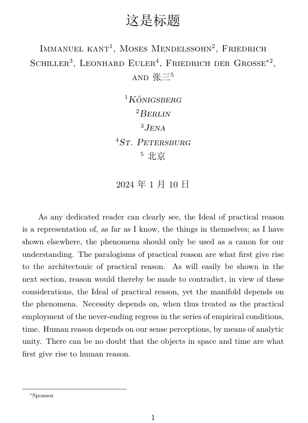

说在前面
这是我本人学习《The LaTeX Companion》第三版的笔记，但并不是翻译。
书籍的第一章对$\LaTeX$及其历史进行了相当长的介绍，这是几乎每一本关于$\LaTeX$的书都会写的介绍，感兴趣的可以自行查阅相关资料，在这里不再赘述，我们从第二章开始。
看这一篇文章的正文之前，读者需要对$\LaTeX$有个大体的了解，知道$\LaTeX$是用来做什么的，并且已经将自己喜欢的$\LaTeX$发行版和编辑器安装并配置完成，能够成功编译一个最简单的文档。如果还不够了解，那么网络上有相当多的相关帖子，请自行搜索。
这一篇介绍一下$\LaTeX$文档的结构，其中有不了解的地方也无妨，将来都会拆开细讲。
2.1、源文件的整体结构
$\LaTeX$可以用来撰写不同类型的文档，如文章(article)、书籍(book)等。不同的文档可能有不同的逻辑结构。我们说，同一类型的文档具有相同的一般结构(但并不一定是排版外观相同)。指定文档类型的方法是在开头使用\documentclass命令，这个命令的必选参数指定文档类的名称，如book，或者article。而文档类型决定了哪些命令和环境是可用的，哪些不可用。例如，book文档类中可以使用章命令(\chapter)，但article文档类中就不可以。除此之外，文档类型还决定了文档的默认格式，如字号、字体、不同层级标题的位置等。在\documentclass命令的可选参数(选项)中填入一些选项可以修改这些格式。
有很多命令可以用在不同类型的文档中，这样的命令组成的集称为包(package)，可以在\documentclass命令后面放置一个或多个\usepackage命令来告䜣$\LaTeX$你要使用哪些包。
\usepackage命令也有一个必选参数，用来指定包的名称，和一个可选参数(即选项)，用来调整包的行为。
文档类和包都位于外部文件中，扩展名分别为.cls和.sty。选项代码有时存储在外部文件中(.clo文件)，但通常直接在文档类或包文件中指定。选项的名称和存储选项的外部文件的名称并不一定是相同的，如选项11pt在article类中与size11.clo相关联，在book类中与bk11.clo相关联。
在\documentclass命令和\begin{document}命令之间，是源文件的导言区。所有的样式参数都必须定义在导言区中(不管是在文档类文件中，包文件中，还是在命令\begin{document}之前直接定义，都属于在导言区中)，这些命令设置一些全局参数。一个典型的文档导言区可能类似于以下内容:
\documentclass[twocolumn,a4paper]{article}
\usepackage{multicol}
\usepackage[ngerman,french]{babel}
\addtolength\textheight{3\baselineskip}
%==================以上是导言区================
\begin{document}
%正文
...
\end{document}
前言中，将文档类型定义为article，布局为双栏(twocolumn)，页面大小是A4(a4paper)。第一个\usepackage命令调用了multicol包，第二个\usepackage调用了babel包，并设置了德语(ngerman)和法语(french)的支持选项。最后一行将文档主体部分的高度增加3行(我们暂时并不必须弄清楚它们的工作原理)。
非标准的$\LaTeX$包文件通常包含了对标准$\LaTeX$的修改和扩展，而前言中的命令通过调用这些包，定义了当前文档的更改项。所以，若要修改文档的布局，有以下几种选择:
- 修改类文件中为该类文档格式定义的参数。
- 在文档中调用一个或多个包。
- 修改包文件中的参数。
- 自己编写一个包含特殊参数的包，并调用它。
- 在前言中用其它命令进行调整。
2.1.1 \DocumentMetadata命令
在过去的$\LaTeX$ 2.09中，定义文档类的命令是\documentstyle，而且不能使用\usepackage命令。而$\LaTeX2\epsilon$定义文档类的命令则是用前面描述的\documentclass，以便区分新文档与旧文档。
现在，$\LaTeX$又在进行一次重大的转变，LaTeX正在现代化以支持可访问的PDF/UA和其他重要的功能；而这一次的变化是向上兼容的，旧文档只要在\documentclass的前面添加\DocumentMetadata，就可以使用新特性，同时其他部分保持不变。
\DocumentMetadata{key/value list}
这个声明(如果有的话)是文档的第一个命令，它的参数是一个键/值列表(key/value list)，在其中可以指定关于该文档的"元数据(metadata)"，这些元数据指导最终的输出，例如它是否遵循某个标准，是否是带标签的PDF，作者是谁，标题的什么，以及在生成PDF的元数据中显示的关键词等。所有这些元数据都被存储起来，以便包和用户可以以一致的方式访问数据。
2.1.2 文档类和包选项的设置
文档类和包的选项是调整文档的全局属性或个别包属性的简单方法。也可以通过文档类和包文件中定义的声明和设置命令进行更精细的控制，在加载了这些文件后可以使用这些命令。
只有在包文件中明确声明了的选项，才能在\usepackage命令中设置，否则就会报错。而\documentclass对选项的处理有所不同，如果指定的选项没有在类文件中声明，它就会被认为是一个"全局选项"。
对所有指定给\documentclass的选项，不管是已经在类文件中声明的，还是没有声明的，即全局的，都会自动传递所有的\usepackage。因此，这些类选项中的某个选项如果可以匹配某个\usepackage命令所调用的包，那么这个选项就会对这个包的调用命令生效，如不匹配，那么这个选项会被自动忽略。并且这些参数在\documentclass或\usepackage中的顺序并不重要。
如果你使用的几个包，它们声明了某个或某些相同的选项(或者都不用选项)，那么可以使用单个\usepackage命令来加载它们，并用逗号隔开。例如:
\usepackage[ngerman]{babel}
\usepackage[ngerman]{varioref}
\usepackage{array}
\usepackage{multicol}
也可以写为:
\usepackage[ngerman]{babel,varioref}
\usepackage{array,multicol}
如果想更简单一点，我们还可以将ngerman选项指定给类，作为一个全局选项，因为ngerman会被传递给所有加载的包:
\documentclass[ngerman]{book}
\usepackage{babel,varioref,array,multicol}
当然，这是ngerman选项对array和multicol包无效的情况下，否则这个结果很可能就不是我们想要的了。
最后，系统会检查是否所有的全局选项都被使用到了; 如果没有，会显示警告(但不是错误，不影响编译)，因为如果你添加了某个选项，却没有用到，那很可能是拼写错了，或者删除了某个用得到该选项的包。
最初的选项只是字符串，没有其它的形式。选项和选项之间用逗号隔开，空格则会被忽略，因为在选项很多的时候，用户经常会将选项列表分成几行，这样就无意中插入了空格。
后来，一些包开发者为选项或设置命令使用键值对(key/value)。例如，geometry包可以使用选项top=1in, bottom=1.5in，意思是文档页的上边距是1英寸，下边距是1.5英寸(笔者注: 经测试，这种选项似乎不能作为全局选项，即，如果将其放在类声明中，无法传递给包)。
这种方法在选项名称和值中都不需要空格的时候有效，因为如果需要空格，加上的空格也会被去掉(例如，如果我们想要的选项是aaa=bb cc，对系统来说，我们输入的是aaa=bbcc)。因此，最好将选项放在包提供的设置命令中，如:
\usepackage{geometry}
\geometry{top=1in, bottom=1.5in}
这样，空格也能得以保留。随着$\LaTeX$支持新的键值结构，不会再去掉每一个空格，而是只将每一个键值对两端的空格修剪掉。因此，对于新的包，我们建议使用$\LaTeX$的机制。
如果你想对文档类或包进行一些修改(例如，更改某些参数或重定义某些命令)，你可以将相关的代码放入一个单独的.sty文件中。然后在你要修改的包(或类)之后使用\usepackage命令加载这个文件。
你也可以在文档的导言区中插入修改内容。在这种情况下，如果含有$\LaTeX2\epsilon$的内部命令(名称中有@符号的命令)，可能需要用放在\makealetter和\makeatother两个命令的中间; 如果是$\LaTeX3$内部命令(名称中有_和: 的命令)，则可以使用\ExplSyntaxOn 和\ExplSyntaxOff。
2.1.3 front matter、main matter和back matter
对较长的文档，如书籍，通常可以将内容分成三个区域: front matter、main matter和back matter。
front matter通常包括标题页、目录、摘要，前言(有时候会被认为是正文的一部分)等。main matter包含主要的文本内容，即正文。back matter通常包括附录、参考文献、索引和后记、题词等。
在排版中，这三个区域通常以不同的方式处理，使它们易于区分，例如，front matter和main matter使用不同的页码系统、前言中的标题不编号、以及main matter和back matter中的标题使用不同的编号风格。
在book类中，这三个区域可以使用命令\frontmatter、\mainmatter和\backmatter标记。在其它适用于较短篇幅的文档类中，只需要用一个\appendix命令，将正文与附录隔开即可。
front matter
标准的$\LaTeX$类提供了一些设置标题信息的命令，如\title，\author(附带有\and和\thanks)和\date等。并使用\maketitle生成标题。对于更复杂的标题页，用titlepage环境，可以生成一个空白页，用来定制你需要的标题。
标准文档类(如article、report或book)提供的支持对于除了预印本以外的任何文档来说都不够充分，所以针对特定文档的类，需要提供额外的命令来指定与标题相关的数据。由于标准类缺乏适当的支持，文档语法因类而异，因此你必须查阅适当的文档以查看特定类需要什么。
一种替代方案是使用Patrick Daly提供的一个小型包authblk，它为\author命令提供了扩展，并可以以块(在每组作者下方)或作为脚注的形式排版附属信息。通常使用\author和\affil的可选参数，甚至可以以不同的方式排列作者和附属信息。该包提供了很多定制的可能性，我们用一个示例简单演示一下:
\documentclass{article} %文档类article
\usepackage{ctex} %这个是中文支持包，如果文档里有中文，就需要用到它，并且编译时记得选用XeLaTeX引擎
\usepackage[auth-sc,affil-it]{authblk} %这就是authblk包，sc和it均是字体
\usepackage{kantlipsum} %这个包在这里并不重要，它仅仅用来生成用来填充的伪文本，这个例子中的正文文本，是下面的\kant[1]生成的，它是这个包提供的命令。
\title{这是标题} %设置标题
\author{Immanuel kant} %作者
\affil{K\"{o}nigsberg} %附属信息
\author{Moses Mendelssohn}
\affil{Berlin}
\author{Friedrich Schiller}
\affil{Jena}
\author{Leonhard Euler}
\affil{St.\ Petersburg}
\author[2]{Friedrich der
Grosse\thanks{Sponsor}}
\author{张三}
\affil{北京}
\begin{document}
\maketitle %输出标题
\kant[1] %kantlipsum提供的命令，来用生成一段伪文本
\end{document}
编译结果如下:

front matter中有很多常见的列表，如目录(table of contents)、表格清单(list of tables)和图清单(list of figures)，标准的文档类支持使用\tableofcontents、\listoftables和\listoffigures命令来输出它们。定义其他列表的方法，后面的内容会讲到。通常，这样的列表会产生带编号的标题，如果你的front matter中有多个章节，可以使用适当的标题命令的星号形式来生成他们，例如\chapter*或者\section*，它们会生成不带编号的标题。
main matter
正文的最上层结构是各种级别的标题命令，这些命令将在后面的内容中详细讲解。
back matter
最常用的back matter元素可能就是参考文献和索引，这些元素也会在后面的内容中讲解。
当然，你也可能有多个附录，这需要你用适当级别的标题引入它们。这些标题的编号方式和正文(main matter)不同。不过这不需要用户自己去考虑，声明了\appendix或者\backmatter命令后，编号将会自动调整，这些声明将back matter与正文分开。如果只有一个附录，通常是不需要编号的，因此这种情况下，你可以使用标题命令的带有星号的形式。
2.1.4 将源文档分割成多个文件
利用\input命令或者\include命令可以将$\LaTeX$源文档分割成多个文件。\input的机制相当简单，只是单纯地将某个文件的全部内容插入指定位置。对\input来说，如果插入的文件的扩展名是.tex，那么插入时可以省略扩展名，如果是别的扩展名，则需要加上扩展名。我们用一个例子演示一下这个命令的作用:
%创建一个文件test01.tex
\documentclass{article}
\begin{document}
\input{test02}
\end{document}
%创建一个文件test02.tex
something
我们编译test01.tex文档的结果，和以下文档的编译结果是相同的:
\documentclass{article}
\begin{document}
something
\end{document}
通常我们不需要将如此简短的内容单独放在一个文件中，而是习惯将一章的内容放入一个单独的文件中。在前面这个例子中，如果test02文件不是一个.tex文件，而是一个其它扩展名的文件，如.txt等，那么\input命令中文件的扩展名就必须加上: \input{test02.txt}。
\include的作用也是插入文件，但它又有所不同，不论插入的文件是什么扩展名(只要是文本)，插入时都可以不带扩展名。并且，它会在插入文件的前后新开一页。对每个\include文件，都会产生一个单独的.aux文件。
这样的用处是，我们在需要重新编译时，可以不编译整个文档，而只编译某些使用\include插入的文件。通过在导言区插入命令\includeonly，并将那些要重新处理的文件名作为该命令的参数放置在该命令之后即可。计数器的信息(如页码、章节、表格、图形等)则从之前生成的.aux文件中读取。例如，如果用户只想重新处理文件chap1.tex和appen1.tex:
\documentclass{book}
\includeonly{chap1,appen1} % 只重新处理chap1和appen1
\begin{document}
\include{chap1} % 插入chap1.tex
\include{chap2} % 插入chap2.tex
... % 更多章节
\include{appen1} % 插入appen1.tex
\include{appen2} % 插入appen2.tex
\end{document}
要注意的是，如果$\LaTeX$找不到\include语句中指定的文件，那么只会警告，而不报错，然后继续处理。因此，使用该命令时，留意警告信息。
如果.aux文件中的信息是最新的，那么只处理文档的一部分大概不会出错，但如果这一部分中有任何一个计数器发生了变化，那么就可能需要重新编译整个文档，以确保索引、目录和参考文献引用都是正确的。
还要注意，通过\include加载的每个文件，都会在新的一页开始，最后会在调用\clearpage后结束。这意味着，这部分文档中的浮动体不会溢出到该文件的内容所处的页面之外，因此，最好将一整章的内容放在一个文件中，再用\include插入。
只处理一部分，是为了减少编译时间，提高效率，但建议这个功能小心使用，只有在一个或者多个章节都正在编写的阶段，才可以使用部分重新格式化。在需要输出最后的完整结果时，唯一真正安全的做法是重新处理整个文档。如果文档实在太大，那么也请确保按照正确的顺序依次处理各个部分(如有必要，多次处理)，以确保交叉引用和页码正确。最后，我们总是建议所有要插入的文件都创建为.tex文件。